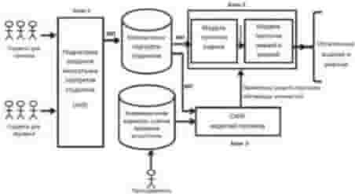
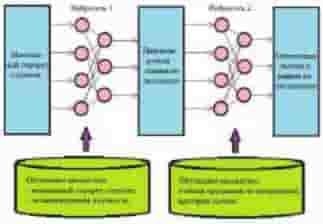

УДК 004.853 DOI 10.18522/2311-3103-2016-7-122136
О.И. Федяев
ПРОГНОЗИРОВАНИЕ ОСТАТОЧНЫХ ЗНАНИЙ СТУДЕНТОВ
ПО ОТДЕЛЬНЫМ ДИСЦИПЛИНАМ С ПОМОЩЬЮ НЕЙРОННЫХ СЕТЕЙ
Научная работа посвящена разработке нейросетевой модели процесса обучения сту- дентов для агентной системы моделирования рынка труда. Эта модель позволит имити- ровать процесс передачи профессиональных навыков и знаний по отдельным дисциплинам в зависимости от личностных характеристик студентов. Система моделирования на осно-
ве искусственных агентов позволит анализировать процесс подготовки молодых специа- листов и прогнозировать возможность их дальнейшего трудоустройства. Целью данной работы является разработка нейросетевой модели, способной функционально описать зависимость получаемых студентом профессиональных знаний и умений от факторов, влияющих на полноту этих знаний. Основной функцией процесса обучения студентов как системы является передача профессиональных знаний и выработка умений у будущих спе- циалистов решать определённые производственные задачи. Процесс обучения является трудно формализуемым и поэтому не может быть описан известными математическими методами. Кроме того, участники рассматриваемого процесса территориально удалены друг от друга, неоднородны по структуре и их деятельность интеллектуальна по своей природе. Эти особенности обуславливают целесообразность применения теории интел- лектуальных агентов к разработке имитационной модели для анализа процесса подготов- ки кадров. Были разработаны методики определения ментальных и психофизиологических особенностей студента. Эти методики в совокупности образуют систему, которая опре- деляет ментальный портрет студента. Разрабатываемая модель процесса обучения должна формировать на выходе остаточные знания студента по отдельной дисциплине, с которыми он выходит на рынок труда. Остаточные знания зависят от ментальности студента и других факторов. Эта связь трудно формализуема. В таких случаях целесооб- разно использовать нейронную сеть, которая позволит выявить существующую связь пу- тем её обучения. Прогноз остаточных знаний по одной конкретно взятой дисциплине для одного студента осуществляется в два этапа. На первом этапе прогнозируется экзамена- ционная оценка на основании ментальности обучаемого. На втором этапе, исходя из про- гнозируемой оценки, формируется усреднённый набор остаточных знаний и умений, соот- ветствующий данной оценке. Каждый из этих этапов невозможно формализовать мате- матически, поэтому были использованы две нейросети. Первая нейронная сеть будет обу- чаться на основании ментальных портретов группы студентов и экзаменационной ведо- мости. Вторая нейросеть – на основании критериев оценки и учебной программы дисцип- лины, в которой содержится перечень знаний и умений. В качестве среды моделирования искусственных нейронных сетей использовался пакет Neural Network Toolbox, который вхо- дит в стандартную поставку MATLAB. Предварительные результаты исследования на про- граммных моделях показали правильность предложенных идей по решению поставленной задачи. На основе данной модели обучения будут разработаны искусственные программные агенты, которые в комплексе будут моделировать динамику процессов обучения группы сту- дентов и их трудоустройство. Новизна работы заключается в новом подходе к нейросете- вому описанию трудно формализуемого процесса профессионального обучения молодых спе- циалистов, основанном на моделировании процесса передачи профессиональных навыков и знаний в зависимости от личностных характеристик студентов. Он включает построение ментального портрета студента и разработку нейронного алгоритма обучения двух каска- дов нейронной модели, которая прогнозирует остаточные знания и навыки у студента по отдельным дисциплинам. Прогнозирование компетенций дает возможность в дальнейшем оценивать востребованность каждого студента на рынке труда.
Модель обучения; профессиональные знания; ментальность студента; нейронная
сеть.
O.I. Fedyaev
PREDICTION OF RESIDUAL KNOWLEDGE OF STUDENTS IN CERTAIN DISCIPLINES BY NEURAL NETWORKS
The scientific work is devoted to the development of a neural network model of the learning process for students agent system modeling of the labor market. This model simulates the transfer of skills and knowledge, depending on the personal characteristics of students. The system will allow the simulation to analyze the process of training young professionals and to predict their future employment prospects. The aim of this work is to develop a model based on a neural net- work capable of functionally describe the dependence of students receive professional knowledge and skills of the factors affecting the completeness of this knowledge. The main function of the learning process of students as the system is to transfer knowledge and develop professional skills
of the future experts to solve specific production problems. The learning process is difficult to formalize, and therefore can not be described by conventional mathematical methods. In addition, participants in the learning process geographically distant from each other, are heterogeneous in structure and activity of intelligent by nature. These features cause the feasibility of the theory of intelligent agents to the development of a simulation model for the analysis of the training process. Have been developed methods for determining the mental and psycho-physiological characteris- tics of the student. These techniques combine to form a system that determines a mental portrait of a student. The developed model of the learning process should form the output residual knowledge of the student on a separate discipline, with whom he comes into the labor market. Residual knowledge depend on the mentality of students and other factors. This relationship is difficult to formalize. In such cases it is advisable to use a neural network that will identify an existing con- nection through her training. Forecast residual knowledge on one particular discipline taken for one student is carried out in two stages. In the first phase is predicted on the basis of the examina- tion score mentality of the student. In the second stage, based on the projected estimates formed averaged residual set of knowledge and skills corresponding to this assessment. Each of these steps can not be formalized mathematically, so the two will be used by the neural network. The first neural network will be trained on the basis of mental portrait of a group of students and the examination sheet. The second neural network - based on the evaluation criteria and curriculum discipline, which contains a list of knowledge and skills. As a medium of artificial neural networks modeling package was used Neural Network Toolbox, which is included in the standard package MATLAB. Preliminary results of a study on software models showed the correctness of the pro- posed ideas for solving the problem. On the basis of this model will be developed artificial learn- ing software agents, which together will simulate the dynamics of the processes of training a group of students and their employment. The novelty of the work lies in a new approach to the description of the neural network is difficult to formalize the process of vocational training of young professionals, based on a simulation of the transfer of skills and knowledge, depending on the personal characteristics of students. It includes the construction of a mental portrait of the student and the development of neural learning algorithm of the two stages of the neural model that predicts residual knowledge and skills of student in certain disciplines. Prediction competen- cies enables to further evaluate the relevance of each student in the labor market.
Training model; professional knowledge; the mentality of the student; neural network.
Введение. Рассматривается задача построения модели процесса профессио- нального обучения для агентной системы моделирования рынка труда, которая позволит анализировать процесс подготовки молодых специалистов, а также про- гнозировать возможность их дальнейшего трудоустройства.
Сам процесс обучения, как объект исследования, является динамическим и характеризуется большой инерционностью. Последствия изменения одного из факторов можно узнать только по окончанию обучения студентов. Поэтому акту- альной как в экономическом, так и в социальном плане, является разработка моде- лей, позволяющих оптимизировать затраты на образование и прогнозировать ре- зультаты инновационных преобразований в подготовке кадров [1, 2]. Однако фор- мально (математически) описать процесс обучения не представляется возможным. В этом случае целесообразно разрабатывать имитационные модели на основе ней- ронных сетей, которые могут обеспечить проведение необходимых исследований по этой проблеме [3, 4].
Целью данной работы является разработка нейросетевой модели, способной функционально описать зависимость получаемых студентом профессиональных знаний и умений от факторов, влияющих на полноту этих знаний. Для достижения этой цели необходимо решить следующие задачи:
рассмотреть процесс обучения студентов университета как систему с рас- пределённым интеллектом;
определить внешние и внутренние факторы, влияющие на качество усваи- вания знаний и навыков;
разработать методику определения ментальных и психофизиологических особенностей преподавателей и студентов;
разработать структуру нейросетевой модели и алгоритм её обучения;
исследовать трудоёмкость настройки модели и адекватность её процессу обучения.
Система профессионального обучения как объект моделирования. Выс- шее учебное заведение, как центр подготовки квалифицированных специалистов, представляет собой распределённую систему, субъектами которой являются пре- подаватели и студенты, взаимодействующие в предоставленной ВУЗом учебной среде, оснащённой соответствующим оборудованием [1, 5, 6]. Качество подготов- ки в основном зависит от следующих факторов:
профессионализма преподавателей;
подготовленности абитуриентов и системы их отбора;
среды обучения (материально-технической базы ВУЗа);
стандартов образования (учебные планы и т. п.);
системы повышения квалификации преподавателей;
организационной структуры управления образованием и трудоустройством. Система подготовки специалистов основывается на взаимодействии мини-
стерства образования, университетов и студентов (рис. 1).

Рис. 1. Схема подготовки специалистов в ВУЗе для предприятий:

( ) – передача знаний и умений; ( ) – нормативные документы; ( ) – заказ на подготовку специалистов; ( ) – подготовленные специалисты
Объектно-ориентированный анализ процесса подготовки молодых специали- стов показал, что его субъекты взаимосвязаны, образуют распределённую, неод- нородную и интеллектуальную систему. Поэтому разработка имитационной моде- ли такой системы, которая будет использована для анализа и прогнозирования об- разовательных процессов, может быть успешно выполнена на основе методов агентно-ориентированного моделирования [4, 7, 8].
Основной функцией процесса обучения студентов как системы является пе- редача профессиональных знаний и выработка умений у будущих специалистов решать определённые производственные задачи. Данная функция реализуется оп- ределённой совокупностью образовательных процессов: лекционные и практиче- ские занятия, производственная практика.
С позиции системного анализа [6] процесс профессиональной подготовки специалистов реализуется сложной распределенной системой, которая состоит из автономных, взаимосвязанных, целенаправленно функционирующих элементов и находится во взаимодействии с внешней средой. Системный анализ предполагает рассмотрение функционирования системы во времени и пространстве с целью вы- деления основных характеристик и параметров как самой системы, так и состав- ляющих её процессов.
Постановка задачи анализа подготовки студентов. В системе подготовки и трудоустройства молодых специалистов можно выделить следующие элементы: молодые специалисты, учебное заведение, министерство образования и фирмы (предприятия). Перечисленные элементы системы неоднородны по своей структу- ре, территориально распределены и обладают сложной функциональностью. Все вместе они образуют распределённую систему, в рамках которой можно решить следующие задачи:
организация эффективного учебного процесса подготовки кадров по про- фессиям в соответствии с учебными планами (ВУЗ);
определение качественных стандартов и учебных планов подготовки кад- ров (министерство науки и образования, учебное заведение);
подбор необходимых кадров для решения производственных задач (фир- мы);
поиск специалистами работы на фирме (предприятии), соответствующей полученной квалификации и удовлетворяющей социальным запросам пре- тендентов на работу.
Перечисленные задачи являются трудно формализуемыми и поэтому не мо- гут быть решены традиционными математическими методами [9, 10]. Кроме того, участники рассматриваемого процесса территориально удалены друг от друга, неоднородны по структуре и их деятельность интеллектуальна по своей природе [11]. Эти особенности обуславливают целесообразность применения теории ин- теллектуальных агентов к разработке имитационной модели для анализа процесса подготовки кадров (рис. 2).
На макроуровне расположены искусственные агенты, моделирующие в рам- ках ограниченной рациональности функции министерства образования, учебного заведения и предприятий (фирм). Микроуровень содержит сообщества агентов, реализующих диалог студентов с работодателями и учебным заведением.
Рис. 2. Общая структура агентно-ориентированной модели процесса подготовки молодых специалистов
Задача 1. Настройка модели по данным наблюдений. Это обратная задача, связанная с нахождением параметров модели, т. е. с построением функции f по наблюдаемым данным Mc , Мп , С и Рс:
Pc f (Mc , Mп , С) , (1)
где Мс – ментальность студента; Мп – ментальность преподавателя; С – среда обучения; Рс – профессионализм студента по одной изучаемой дисциплине.
Ментальность студента (Мс) определяется элементами, которые характе- ризуют его воспитательный аспект и приобретённый жизненный опыт:
Мc (m, i, p, s, ...),
где m – ментальность; i – интеллект; p – психология; s – здоровье.
(2)
Ментальность преподавателя (Мп) в данном случае определяется факторами, от которых зависит качество передачи знаний от преподавателя к студенту:
Mп (us, uz, h, v, a, ...),
где us – учёная степень; uz – учёное звание; h – стаж; v – возраст; a – артистизм.
(3)
Среда обучения (С) характеризуется состоянием учебно-методического и технического обеспечения учебного процесса, а также уровнем организации обу- чения студентов.
Профессионализм студента по одной изучаемой дисциплине (Рс) определяет- ся объёмом знаний (zc) и умений (uc), которые он получает в процессе изучения данной дисциплины:
zc Zд Z , uc Uд U ,
Pc zc
Pc Pд ,
uc , Pд Zд
Uд ,
(4)
где Zд – объём знаний, определяемый учебной программой дисциплины, которая читается на кафедре; Z – объём знаний по данному профессиональному направле- нию, определяемый современным состоянием науки и техники;
Задача 2. Формирование знаний и умений по ментальности участников обра- зовательного процесса. Данная задача состоит в явном нахождении профессиона- лизма студента (Рс), т.е. его знаний и умений, после изучения конкретной дисцип- лины по замеренным данным о ментальности студента (Мс) и преподавателя (Мп) по построенной модели f:
Pc
f (Mc , Mп , С).
(5)
Эта задача относится к классу прогнозных задач [12, 13]. С её помощью можно исследовать влияние различных параметров (содержание учебной программы, кон- тингента студентов и т.д.) на качество образования в конкретном университете.
Факторы влияния на качество усвоения студентами знаний. Для по- строения модели агента «Студент» необходимо учесть все факторы, влияющие на студента в той или иной степени, а также определить степень их влияния. Так как каждый отдельный студент является, прежде всего, личностью, то и анализировать необходимо его личностные характеристики.
Были проанализированы все факторы, влияющие на ментальный портрет студента (рис. 3). Были использованы популярные психологические методы их анализа [14]. В результате для всестороннего анализа личности были выделены следующие типы факторов: мотивация студента к учёбе, интеллектуальные спо- собности студента, психологические особенности студента, физические факторы, влияющие на обучение. Каждый из этих типов разбивается на несколько показате- лей, которые можно определить по результатам тестов, опросов и т.д. [15].
Рис. 3. Факторы, влияющие на усвоение материала студентом
На наш взгляд, факторы, влияющие на усвоение студентом учебного мате- риала, можно систематизировать так, как это показано на рис. 3. Анализ этих фак- торов позволит изучить личность обучаемого с разных сторон, выявить наиболее важные ментальные особенности, влияющие на успешность обучения [16].
Были разработаны методики определения ментальных и психофизиологиче- ских особенностей студента. Результаты по оценке каждого из вышеперечислен- ных параметров могут быть систематизированы и стандартизованы. Эти методики в совокупности образуют систему, которая определяет ментальный портрет сту- дента. В табл. 1 представлена данная систематизация.
Таблица 1
Систематизация характеристик студента
Характеристика ментальности | Способ определения | Оригинальная градация |
Уровень интеллекта | Тест на IQ Айзенка | от 0 до 160 баллов |
Тип темперамента | Тест Айзенка «Тип темперамента» | 4 вида темпераментов |
Социальный интеллект | Тест Гилфорда | от 0 до 57 баллов |
Уровень мотивации | Тест Гречикова | 5 видов мотивации |
Уровень креативности | Тест Торренса | от 0 до 70 и более баллов |
Специальные способности | Тест Айзенка по 3 видам специальных способностей | от 0 до 150 баллов за каждый |
Умение работать в команде | Самостоятельное определение | от 0 до 100% |
Жилищные условия | Самостоятельное определение | от 0 до 100% |
Состояние здоровья | Самостоятельное определение | от 0 до 100% |
Пол | Самостоятельное определение | женский или мужской |
После прохождения всех опросов и тестов будет определен многопрофиль- ный портрет студента, который можно будет использовать при разработке модели передачи знаний.
Нейросетевая модель зависимости остаточных знаний студентов от их ментальности. Процесс обучения студентов заключается в передаче знаний и на- выков от преподавателей. Качество обучения фиксируется в экзаменационной ве- домости. Разрабатываемая модель процесса обучения должна формировать на вы- ходе остаточные знания студента по отдельной дисциплине, с которыми он выхо- дит на рынок труда. Эта модель реализуется в блоке 2 на рис. 4. По прогнозным данным об остаточных знаниях и умениях работодатели решают вопрос о трудо- устройстве студентов на вакантные должности.

Рис. 4. Потоки данных в системе прогнозирования результатов обучения
Остаточные знания зависят от ментальности студента и других факторов, ко- торые описаны в предыдущем разделе. Эта связь трудно формализуема, т. е. мате- матически описать её сложно. В таких случаях, как уже было указано выше, целе- сообразно использовать нейронную сеть [17–19], которая позволит выявить суще- ствующую связь путем её обучения. Для обучения нейросети имеется в распоря- жении следующая объективная информация:
психологический портрет, характеризующий ментальность студента;
учебная программа дисциплины;
критерии оценки знаний;
экзаменационная ведомость, отображающая успешность обучения студентов. Прогноз остаточных знаний по одной конкретно взятой дисциплине для од-
ного студента осуществляется в два этапа. На первом этапе прогнозируется экза- менационная оценка на основании ментальности обучаемого. На втором этапе, исходя из прогнозируемой оценки, формируется усреднённый набор остаточных знаний и умений, соответствующий данной оценке.
Каждый из этих этапов невозможно формализовать математически, поэтому были использованы две нейросети. Первая нейронная сеть будет обучаться на ос- новании ментальных портретов группы студентов и экзаменационной ведомости. Вторая нейросеть – на основании критериев оценки и учебной программы дисцип- лины, в которой содержится перечень знаний и умений. Схема описанной двух- каскадной модели представлена на рис. 5.

Рис. 5. Схема нейромодели профессионального обучения студентов на примере одной дисциплины
Нейроалгоритм моделирования зависимости экзаменационной оценки от личностных характеристик студента реализуется первой нейросетью. Входными сигналами первой нейросети являются ментальные характеристики студентов, по- лученные в процессе их тестирования (табл. 1). Входные сигналы образуют вектор Х=(x1, x2, ..., x10), компоненты которого описаны в табл. 2.
Таблица 2
Входные параметры первой нейросети
Тип ментальной характеристики | Входной сигнал нейросети | Код |
Мотивация | Тип мотивации | x1 |
Интеллектуальные способности | Уровень IQ | x2 |
Уровень специальных способностей (в данном случае – вычислительных) | x3 |
Уровень социального интеллекта [0..1] | x4 |
Психологические особенности | Тип темперамента [0..1] | x5 |
Уровень креативности | x6 |
Умение работать в команде | x7 |
Физические факторы | Жилищные условия | x8 |
Состояние здоровья | x9 |
Пол | x10 |
На выходе нейросеть должна формировать сигналы, определяющие прогнозную экзаменационную оценку, соответствующую студенту с определенной ментально- стью, которая подаётся на её вход. Оценка выставляется по пятибальной шкале.
Нейросетевая модель формирования экзаменационной оценки строиться на базе многослойного персептрона с нелинейной функцией активации. Достаточно использовать 2–3 слоя, чтобы обеспечить реализацию любой нелинейной зависи- мости между выходом и входом.
Вторая нейросеть реализует нейроалгоритм моделирования зависимости ос- таточных знаний студента по дисциплине от полученной экзаменационной оценки. Входные сигналы второй нейросети представляют собой экзаменационную оцен- ку, полученную с выхода первой нейросети.
Выходные сигналы нейросети образуют вектор, компоненты которого фик- сируют наличие или отсутствие соответствующего остаточного знания или уме- ния. Размер вектора определяется суммарным количеством знаний и умений, пре- дусмотренных учебной программой дисциплины. Они обозначены вектором Y=(y1, y2, ..., yn), где n – количество знаний и умений; yi[0,1]. Выходные сигналы показаны в табл. 3.
Таблица 3
Выходные сигналы второй нейросети
№ | Знания и умения | Код |
|
1 | Знание 1 (Например, знание методов, алгоритмов) | y1 |
Список знаний |
2 | Знание 2 | y2 |
3 | Знание 3 | y3 |
... | ... | ... |
k | Знание k | yk |
k+1 | Умение 1 (Умение применять методы, алгоритмы) | yk+1 |
Список умений |
... | ... | ... |
n | Умение m | yn |
Структура у обоих нейросетей относится к классу однородных многослойных персептронов с полными последовательными связями и с сигмоидальной функци- ей активации [17]. Обучение нейросетей проводилось по стратегии «обучение с учителем» по алгоритму обратного распространения ошибки. Обучающее множе- ство для второй нейросети составляет преподаватель-профессионал (эксперт) по своей дисциплине, используя утверждённые критерии оценки и учебную програм- му дисциплины, которая содержит перечень знаний и умений.
Обучение и анализ адекватности нейросетевых моделей. В качестве среды моделирования искусственных нейронных сетей использовался пакет Neural Network Toolbox, который входит в стандартную поставку MATLAB [20]. Пакет Neural Network Toolbox обеспечивает всестороннюю поддержку типовых нейросе- тевых парадигм и имеет открытую модульную архитектуру.
Таблица 4
Результаты тестирования студентов
Характеристика | Студенты |
1 | 2 | 3 | 4 | 5 | 6 |
Уровень интеллекта | 125 | 110 | 115 | 100 | 98 | 105 |
Тип темперамента | Хол | Флег | Мел | Хол | Санг | Санг |
Социальный интеллект | 45 | 50 | 38 | 42 | 23 | 33 |
Тип мотивации | Патр | Проф | Инст | Изб | Изб | Инст |
Уровень креативности | 64 | 30 | 62 | 24 | 78 | 49 |
Специальные способности | 123 | 140 | 113 | 94 | 75 | 96 |
Умение работать в команде | 6/8 | 5/8 | 6/8 | 3/8 | 2/8 | 7/8 |
Жилищные условия | 60 % | 75 % | 90% | 90% | 50 % | 45 % |
Состояние здоровья | 90 % | 80 % | 80% | 75% | 80 % | 75 % |
Пол | м | м | ж | м | ж | ж |
Полученная оценка | 5 | 5 | 4 | 3 | 2 | 2 |
Пакет содержит функции командной строки и графический интерфейс поль- зователя для быстрого пошагового создания различных программных моделей нейросетей [17].
При построении обучающего множества для первой нейросети были выбра- ны 6 студентов, прослушавших учебный курс «Системы искусственного интеллек- та» и уже получивших экзаменационные оценки. Студенты для тестирования бы- ли выбраны таким образом, чтобы в обучающем множестве были представлены все экзаменационные оценки.
Эти студенты были протестированы согласно описанной методики. Результа- ты их анкетирования и тестирования показаны в табл. 4.
Рис. 6. Результаты обучения нейросети
«Ментальность студента – прогноз – оценка»
Для обучающего множества были взяты данные первых пяти студентов. Резуль- таты же студента под номером 6 будут использованы для проверки обученной нейро- сети. Как видно на рис. 6, для обучения двухслойной нейросети хватило 16 эпох.
Обучающее множество для второй нейросети должен готовить преподава- тель, который читает студентам учебную дисциплину. Из учебной программы (а это утверждённый нормативный документ) был взят список знаний и умений, которыми должен овладеть студент по данной дисциплине, и для него преподава- телем сформирована таблица, показывающая, за какие знания и навыки ставится определённая оценка.
Рис. 7. Результаты обучения нейромодели «Оценка – прогноз – остаточные знания»
По аналогии с предыдущей нейромоделью была построена модель второй трёхслойной нейросети с количеством нейронов в слоях: 4-20-35. Входные сигна- лы нейросети – это вектор оценок, а выходные – вектор усреднённых знаний и навыков. Процесс обучения модели представлен на рис. 7.
Совместная работа двух обученных нейронных сетей оценивалась на харак- теристиках ментальности студента с номером 6 (табл. 4), который не участвовал в обучении. Моделирование проводилось в соответствии с двухкаскадной схемой на рис. 4. Анализ результата работы первого каскада показал, что значения компо- нент выходного вектора близки к коду (1,0,0,0). Эта кодировка соответствует эк- заменационной оценке «неудовлетворительно», которую в действительности по- лучил этот студент на экзамене (табл. 4).
Спрогнозированная оценка с выхода первой нейросети подавалась на вход второй нейросети, которая формировала результирующий вектор Y остаточных знаний и умений этого студента (рис. 8).
Рис. 8. Прогнозные остаточные знания и навыки для шестого студента по рассмотренной учебной дисциплине
Значения компонент вектора Y можно трактовать как степени уверенности в том, что у данного студента сохраняются в его памяти соответствующие знания и умения (конечно, относительно используемых обучающих множеств). Если сопоста- вить полученный результат с критериями оценки по учебной дисциплине «Системы искусственного интеллекта», то представленная на рис. 8 совокупность спрогнози- рованных знаний и умений соответствует оценке «неудовлетворительно».
Заключение. Предложен новый подход к описанию трудно формализуемого процесса обучения студентов, позволяющий для каждой изучаемой дисциплины строить соответствующую нейромодель, которая даёт возможность прогнозиро- вать остаточные знания и навыки у студента в зависимости от его личностных ха- рактеристик.
Установлены внешние и внутренние факторы, влияющие на успеваемость студентов и качество усваивания знаний и навыков. Особое внимание было уделе- но студенту как личности и его месту в процессе обучения. Исходя из этого, была разработана специальная методика, позволяющая анализировать психологические, эмоциональные, природные и физические особенности студента. Методика была основана на классических психологических подходах, обладающих универсально- стью и достаточной легкостью в применении.
После получения ментального портрета студента был разработан нейроалго- ритм построения двухкаскадной нейромодели, имитирующей процесс профессио- нального обучения студента путём передачи ему выявленных остаточных знаний и навыков, которые будут использованы на рынке труда.
Предварительные результаты исследования на программных моделях показа- ли правильность предложенных идей по решению поставленной задачи.
На основе данной модели обучения будут разработаны искусственные про- граммные агенты [21], которые в комплексе будут моделировать динамику про- цессов обучения группы студентов и их трудоустройство.
БИБЛИОГРАФИЧЕСКИЙ СПИСОК
Тельнов Ю.Ф., Данилов А.В., Казаков В.А. Применение многоагентной технологии для реше- ния образовательных задач в информационно-образовательном пространстве // Инжиниринг предприятий и управление знаниями: Сб. науч. тр. 18-й научно-практической конференции (ИПи УЗ-2015, 21-24 апреля 2015 г., Москва, МЭСИ). – М.: МЭСИ, 2015. – С. 451-457.
Федяев О.И. Многоагентная модель процесса обучения студентов на кафедральном уровне // Наукові праці Донецького національного технічного університету. Серія "Проблеми моделювання та автоматизації проектування динамічних систем". Вип. 5
(116). – Донецьк: ДонНТУ, 2006. – С. 105-116.
Трембач В.М. Интеллектуальная обучающая система с адаптацией индивидуальной тра- ектории обучения // Труды 15-й Национальной конференции по искусственному интел- лекту с международным участием (КИИ-2016) (3-9 октября 2016 г., Смоленск, Россия): Труды конференции. Т. 3. – Смоленск: Изд-во Универсум, 2016. – С. 203-211.
Федяев О.И., Лукина Ю.Ю., Стропалов А.С. Анализ и прогнозирование процесса трудо- устройства молодых специалистов с помощью мультиагентной имитационной модели // Труды конференции ИАИ-2013, КПИ. – Киев, 2013. – С. 47-53.
Мутовкина Н.Ю., Палюх Б.В., Клюшин А.Ю. Нечеткая оценка конкурентоспособности выпускников высших учебных заведений // Труды 15-й Национальной конференции по искусственному интеллекту с международным участием (КИИ-2016) (3-9 октября 2016 г., Смоленск, Россия). Т. 3. – Смоленск: Изд-во Универсум, 2016. – С. 123-130.
Федяев О.И., Жабская Т.Е. Проектирование виртуальной кафедры университета на ос- нове многомодельного агентно-ориентированного подхода // Искусственный интеллект. – 2010. – № 3. – С. 679-686.
Zhabska Tetiana, Fedyaev Oleg. The development of agent-based intellectual e-learning envi- ronment // Proceedings of the IADIS International conference Intelligent systems and agents 2011 Rome, Italy July 24-26, 2011. – P. 143-147.
Закирова Э.И. Управление образовательными системами с использованием мультиагентных технологий // Наука и образование. Научное издание МГТУ им. Н.Э. Баумана. – 2013. – № 9. – С. 373-390.
Янковская А.Е., Шурыгин Ю.А., Ямшанов А.В., Кривдюк Н.М. Определение уровня усво- енных знаний по обучающему курсу, представленному семантической сетью // Труды 5-й конференции "Открытые семантические технологии проектирования интеллектуальных систем" (OSTIS-2015) (19-21 февраля 2015, Минск). – Минск.: БГУИР, 2015. – С. 331-338.
Шеркунов В.В. Онтологический подход к анализу компетенций выпускников вузов // Труды 5-й конференции "Открытые семантические технологии проектирования интел- лектуальных систем" (OSTIS-2015) (19-21 февраля 2015, Минск). – Минск: БГУИР, 2015. – С. 351-356.
Власов А.А., Нехаев И.Н. Интеллектуальная система адаптивного тестирования уровня усвоения знаний // Двенадцатая национальная конференция по искусственному интел- лекту с международным участием «КИИ-2010» (20–24 сентября 2010 г., г. Тверь, Рос- сия): Труды конференции. Т. 3. – М.: Физматлит, 2010. – С. 257-263.
Данилов А.Н., Лобов Н.В., Столбов В.Ю., Столбова И.Д. Компетентностная модель выпуск- ника: опыт проектирования // Высшее образование сегодня. – 2013. – № 6. – С. 25-33.
Гитман М.Б., Данилов А.Н., Столбов В.Ю. Об одном подходе к контролю уровня сфор- мированности базовых компетенций выпускников вуза // Высшее образование в России. – 2012. – № 4. – С. 13-18.
Ильин Е.П. Психология творчества, креативности, одарённости. – СПб.: Питер, 2004. – 537 с.
Айзенк Г. Новые тесты IQ. – М.: Изд-во "ЭСКМО", 2003. – 189 с.
Дейнека А.В. и др. Современные тенденции в управлении персоналом: учеб. пособие. – М.: Изд-во "Академия естествознания", 2009. – 294 с.
Круглов В.В. и др. Нечётка логика и искусственные нейронные сети. – М.: Физматлит,
2001. – 224 с.
Кольцов Ю.В. Добровольская Н.Ю.Нейросетевые модели в адаптивном компьютерном обу- чении // Educational Technology & Society. – 2002. – № 5 (2). http://ifets.ieee.org/russian/ periodical/V_52_2002EE.html.
Дьяченко С.А. Использование нейронных сетей при изучении процесса приспособляе- мости студенчества к вузовскому обучению // Нейросетевые технологии и их примене- ние: Сборник трудов международной научной конференции «Нейросетевые технологии и их применение 2002-2003». – Краматорск: ДГМА, 2003. – С. 67-70.
Дьяконов В. и др. Математические пакеты расширения MATLAB. Специальный спра- вочник. – СПб.: Питер, 2001. – 268 с.
Ивашкин Ю.А. Агентные технологии и мультиагентное моделирование: учеб. пособие. – М.: МФТИ, 2013. – 268 с.
REFERENCES
Tel'nov Yu.F., Danilov A.V., Kazakov V.A. Primenenie mnogoagentnoy tekhnologii dlya resheniya obrazovatel'nykh zadach v informatsionno-obrazovatel'nom prostranstve [The application of multi- agent technology for solving educational challenges in the information educational environment], Inzhiniring predpriyatiy i upravlenie znaniyami: Sb. nauch. tr. 18-y nauchno-prakticheskoy konferentsii (IPi UZ-2015, 21-24 aprelya 2015 g., Moskva, MESI) [Engineering enterprises and knowledge management: SB. scientific. Tr. 18-th scientific-practical conference (IAS UZ-2015 21- 24 April 2015, Moscow, MESI)]. Moscow: MESI, 2015, pp. 451-457.
Fedyaev O.I. Mnogoagentnaya model' protsessa obucheniya studentov na kafedral'nom urovne [A multi-agent model of the learning process of students at Cathedral level], Naukovі pratsі Donets'kogo natsіonal'nogo tekhnіchnogo unіversitetu. Serіya "Problemi modelyuvannya ta avtomatizatsії proektuvannya dinamіchnikh sistem" [Scientific works of Donetsk national technical University. Series "Problems of modeling and design automation of dynamic sys- tems]. Issue 5 (116). Donets'k: DonNTU, 2006, pp. 105-116.
Trembach V.M. Intellektual'naya obuchayushchaya sistema s adaptatsiey individual'noy traektorii obucheniya [Intelligent tutoring system adaptation individual learning paths], Trudy 15-y Natsional'noy konferentsii po iskusstvennomu intellektu s mezhdunarodnym uchastiem (KII-2016) (3-9 oktyabrya 2016 g., Smolensk, Rossiya): Trudy konferentsii [Proceedings of the 15th National conference on artificial intelligence with international participation (KII-2016) (3-9 July, 2016, Smolensk, Russia): Proceedings of the conference]. Vol. 3. Smolensk: Izd-vo Universum, 2016, pp. 203-211.
Fedyaev O.I., Lukina Yu.Yu., Stropalov A.S. Analiz i prognozirovanie protsessa trudoustroystva molodykh spetsialistov s pomoshch'yu mul'tiagentnoy imitatsionnoy modeli [Analysis and forecasting of the process of employment of young specialists with multi-agent simulation model], Trudy konferentsii IAI-2013, KPI [The conference proceedings of IAS- 2013, CRPD]. Kiev, 2013, pp. 47-53.
Mutovkina N.Yu., Palyukh B.V., Klyushin A.Yu. Nechetkaya otsenka konkurentosposobnosti vypusknikov vysshikh uchebnykh zavedeniy [Fuzzy evaluation of the competitiveness of graduates of higher education institutions], Trudy 15-y Natsional'noy konferentsii po iskusstvennomu intellektu s mezhdunarodnym uchastiem (KII-2016) (3-9 oktyabrya 2016 g., Smolensk, Rossiya) [Proceedings of the 15th National conference on artificial intelligence with international participation (KII-2016) (3-9 July, 2016, Smolensk, Russia)]. Vol. 3. Smolensk: Izd-vo Universum, 2016, pp. 123-130.
Fedyaev O.I., Zhabskaya T.E. Proektirovanie virtual'noy kafedry universiteta na osnove mnogomodel'nogo agentno-orientirovannogo podkhoda [The virtual design Department of the University on the basis of the multi-model agent-oriented approach], Iskusstvennyy intellect [Artificial intelligence], 2010, No. 3, pp. 679-686.
Zhabska Tetiana, Fedyaev Oleg. The development of agent-based intellectual e-learning envi- ronment, Proceedings of the IADIS International conference Intelligent systems and agents 2011 Rome, Italy July 24-26, 2011, pp. 143-147.
Zakirova E.I. Upravlenie obrazovatel'nymi sistemami s ispol'zovaniem mul'tiagentnykh tekhnologiy [Management of educational systems using multi-agent technology], Nauka i obrazovanie [Science and education], 2013, No. 9, pp. 373-390.
Yankovskaya A.E., Shurygin Yu.A., Yamshanov A.V., Krivdyuk N.M. Opredelenie urovnya usvoennykh znaniy po obuchayushchemu kursu, predstavlennomu semanticheskoy set'yu [Determi- nation of the level of acquired knowledge on the learning rate represented by semantic network], Trudy 5-y konferentsii "Otkrytye semanticheskie tekhnologii proektirovaniya intellektual'nykh sistem" (OSTIS-2015) (19-21 fevralya 2015, Minsk) [Proceedings of 5th conference "Open semantic technol- ogy of intelligent systems" (OSTIS-2015) (19-21 Feb 2015]. Minsk.: BGUIR, 2015, pp. 331-338.
Sherkunov V.V. Ontologicheskiy podkhod k analizu kompetentsiy vypusknikov vuzov [Onto- logical approach to the analysis of competencies of graduates of universities], Trudy 5-y konferentsii "Otkrytye semanticheskie tekhnologii proektirovaniya intellektual'nykh sistem" (OSTIS-2015) (19-21 fevralya 2015, Minsk) [Ontological approach to the analysis of compe- tencies of graduates of universities]. Minsk: BGUIR, 2015, pp. 351-356.
Vlasov A.A., Nekhaev I.N. Intellektual'naya sistema adaptivnogo testirovaniya urovnya usvoeniya znaniy [The intellectual system of adaptive testing level of learning], Dvenadtsataya natsional'naya konferentsiya po iskusstvennomu intellektu s mezhdunarodnym uchastiem «KII-2010» (20–24 sentyabrya 2010 g., g. Tver', Rossiya): Trudy konferentsii [Twelfth national conference on artificial intelligence with international participation "KII-2010" (20-24 September 2010, Tver, Russia): Pro- ceedings of the conference]. Vol. 3. Moscow: Fizmatlit, 2010, pp. 257-263.
Danilov A.N., Lobov N.V., Stolbov V.Yu., Stolbova I.D. Kompetentnostnaya model' vypusknika: opyt proektirovaniya [Competence model of a graduate: the design experience], Vysshee obrazovanie segodnya [Higher Education Today], 2013, No. 6, pp. 25-33.
Gitman M.B., Danilov A.N., Stolbov V.Yu. Ob odnom podkhode k kontrolyu urovnya sformirovannosti bazovykh kompetentsiy vypusknikov vuza [About one approach to monitor- ing the level of formation of basic competences of the graduates of the University], Vysshee obrazovanie v Rossii [Higher Education in Russia], 2012, No. 4, pp. 13-18.
Il'in E.P. Psikhologiya tvorchestva, kreativnosti, odarennosti [The psychology of creativity, creativity, talent]. St. Petersburg: Piter, 2004, 537 p.
Ayzenk G. Novye testy IQ [New IQ tests]. Moscow: Izd-vo "ESKMO", 2003, 189 p.
Deyneka A.V. i dr. Sovremennye tendentsii v upravlenii personalom: ucheb. Posobie [Modern trends in personnel management: textbook]. Moscow: Izd-vo "Akademiya estestvoznaniya", 2009, 294 p.
Kruglov V.V. i dr. Nechetka logika i iskusstvennye neyronnye seti [Fuzzy logic and artificial neural networks]. Moscow: Fizmatlit, 2001, 224 p.
Kol'tsov Yu.V. Dobrovol'skaya N.Yu. Neyrosetevye modeli v adaptivnom komp'yuternom obuchenii [Neural network model in adaptive computer training], Educational Technology & Society [Educational Technology & Society], 2002, No. 5 (2). Available at: http://ifets.ieee.org/russian/periodical/V_52_2002EE.html.
D'yachenko S.A. Ispol'zovanie neyronnykh setey pri izuchenii protsessa prisposoblyaemosti studenchestva k vuzovskomu obucheniyu [The use of neural networks in the study of the pro- cess of adaptation of students to University learning], Neyrosetevye tekhnologii i ikh primenenie: Sbornik trudov mezhdunarodnoy nauchnoy konferentsii «Neyrosetevye tekhnologii i ikh primenenie 2002-2003» [Neural network technology and their application: proceedings of the international scientific conference "Neural network technology and their application 2002-2003"]. Kramatorsk: DGMA, 2003, pp. 67-70.
D'yakonov V. i dr. Matematicheskie pakety rasshireniya MATLAB. Spetsial'nyy spravochnik [Mathematical expansion packs MATLAB. A special Handbook]. St. Petersburg: Piter, 2001, 268 p.
Ivashkin Yu.A. Agentnye tekhnologii i mul'tiagentnoe modelirovanie: ucheb. Posobie [Agent technologies and multi-agent modeling: a tutorial]. Moscow: MFTI, 2013, 268 p.
Статью рекомендовал к опубликованию д.т.н., профессор А.Г. Коробейников.
Федяев Олег Иванович – Донецкий национальный технический университет; e-mail: fedyaev@donntu.org; ДНР, г. Донецк, ул. Артема, 58; тел.: +380505590005; кафедра про- граммной инженерии; зав. кафедрой; к.т.н.; доцент.
Fedyaev Oleg Ivanovich – Donetsk National Technical University; e-mail: fedyaev@donntu.org; 58, Artem street, Donetsk, Donetsk People's Republic; phone: +380505590005; the department software engineering; associate professor.